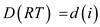
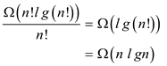
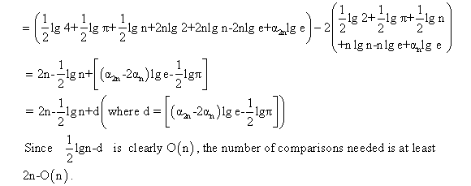
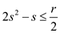

a.
When a comparison algorithm A is used to sort, there will be at least n! leaves reached in decision tree TA. This is because, there will a leaf for each possible input permutation and no two input permutations can reach the same leaf.
In a deterministic algorithm, the same leaf must be reached when a specific permutation is given as input so that not more than n! leaves are reached. Therefore there will be one leaf for each input permutation and exactly n! leaves are reached.
The probability of each of these n! leaves will be 1/n!. The probability of other leaves will be 0.
Hence it can be considered for rest of this problem that the paths that lead to the leaves with 0 probability are not present in the tree as they do not participate in the running time of the sort.
Thus, decision tree TA has only the n! leaves with probability 1/n!.
b.
When k > 1, then the root of decision tree T is not a leaf. All the leaves of T are leaves in LT and RT.
A leaf at depth h in left subtree LT or right subtree RT will be at depth h+ T.
Thus, D(T) must be equal to the sum of D(LT) , D(RT) and K where K is the total number of leaves.
Consider that = Depth of node x in tree T.
Then,
c.
In order to prove that, first prove that
and .
Proof of :
In order to prove that, it is sufficient if it is proved that for i=1,2,..,k-1.
For any i=1,2,..,k-1, there will be a RT with i leaves and LT with k-1 leaves. Then  and .
Construct T such that RT and LT are the right and left sub trees of T’s root
respectively.
Then,
Proof of :
In order to prove that, it is sufficient if it is proved that for i=1,2,..,k-1.
Consider a tree T with k leaves such that D(T) = d(k). Let RT and LT be T’s right and left sub tree, respectively, and let i be the number of leaves in RT. Then k-i is the number of leaves in LT.
The values of i and k-1 cannot be 0 because if it happens then either the RT or LT will have all the k leaves of T. Also the subtree will have a which is a contradiction to the choice of T as the k- leaf tree with the minimum D.
Consider .
In order to find the value of i that minimizes fk , find i for which the derivative of fk with respect to i is 0:
is 0 at .
To confirm that is 0 at is a minimum, check that the second derivative of fk is positive at :
Proof of using substitution method:
Base case:
for any constant c.
Inductive step:
Assume for, where c is some constant to be determined.
and hence
e.
From part (d) and using the fact TA has n! leaves (part a), it can be concluded that
D(TA) is the sum of lengths of the decision- tree path for sorting all input permutations.
As n! permutations have equal probability 1/n!, the expected time is sort n random elements ( 1 input permutations) is the total time for all permutations divided by n!.

f.
Deterministic decision tree (algorithm) is as good as the randomized decision tree (algorithm) when comparison is made on average number of comparisons.
Following are the steps to modify a randomized decision tree ( algorithm ) to deterministic decision tree (algorithm ):
• At each randomized node, select the child with the smallest sub tree.
• Delete all the other children of the randomized node.
• Join the randomized node itself.
The average number of comparisons for the deterministic decision tree (algorithm) and a randomized decision tree ( algorithm ) are almost the same. This is because in each case, the higher- average sub trees are removed.
Each time a randomized node is joined to the tree, the average is being reduced.
Thus, the randomized algorithm and the corresponding deterministic algorithm will take almost the same number of comparisons.
Running time is the time taken by the algorithm for its
execution. If all the elements are traced once and there are
n elements, then it is said that the algorithm takes running
time of .
.
In the similar way, if there are two loops which traces a
matrix, then it takes the order of .
.
Stability of algorithm means that the order of entering the elements should be maintained in the output as well. This means that if any element is entered before another element, then it should be maintained in output as well.
Constant amount of storage space: The algorithm should take a constant amount of storage space and it should not vary.
a)
To sort an array of  data
records, each record’s key having value either 0 or 1, counting
sort algorithm is used. Counting sort algorithm runs in time and is
stable.
data
records, each record’s key having value either 0 or 1, counting
sort algorithm is used. Counting sort algorithm runs in time and is
stable.
• Consider the array of n elements having data value from 0 to k and any element can repeat any time.
• For sorting array using counting sort algorithm, it requires two more arrays firstwhich stores the sorted elements of array L and other array for the temporary work.
• Counting sort algorithm is also known as integer sort algorithm.
The algorithm of counting sort is as follows:
COUNTING-SORT ( L , M , k )
// initializing the temporary array with 0.
1. P [0…k] is the array for temporary storage of array elements.
// for loop is used to traverse all element of loop.
2. for i=0 to k
3. P[i] = 0
// traversing the array to be sorted from initial index to its length.
4. for j=0 to L.length
//updating the temporary array
5. P[L[j]]= P[L[j]]+1
// travers the array P
6. for i=0 to k
// for integer i in each position of P finding the number of elements less than i
7 P[i] = P[i] +P [i-1]
// loop for putting the elements of array L in the array M in sorted order.
8. for j=0 to L.length down to 1
9. M [L[j]]] =L[j]
// updating the value in temporary array P
10. P [L[j]] =P [L[j]]-1
Explanation of algorithm:
• In the above algorithm, the loop in line 2-3 takes  time for
its execution.
time for
its execution.
• The loop in line 4-5 takes time as
the.
• The loop in line 6-7 runs in and the
loop in line 8-10 runs intime.
• So, the total time taken by the algorithm is. As the value of n is greater than the value of k for any array, it can be ignored.
Hence, the total time taken by the above algorithm is.
b)
Quick sort Partition algorithm runs in time and
storage space should be constant.
QUICKSORT-PARTITION
//initialize the value of i
1. i=0
// for loop is used to traverse the all element of array
2. for j=1 to n
//if statement is used to check the value is less than or equal to 0.
3. if key[Array[j]] <=0
// increment the value of i
4. then i=i+1
//exchange the value at location i with j
5. exchange  to
to
Explanation of Algorithm:
• In the above code of quick sort algorithm, single for loop is
used to sort the data hence total time taken by algorithm is
• In the above algorithm in- place sorting method is used and stores the all sorted elements in the same array in which it is sorting So, it takes constant amount of space for the storage of its elements.
Insertion sort is a stable algorithm and it uses no more than a constant amount of storage space in addition to the original array.
INSERTION-SORT ( L )
// loop traversing each element of array starting with 2.
1. for j= 2 to L.length
// storing the jth element of array into the temporary variable key.
2. key=L[j]
// initializing the variable i with one less than j
3. i=j-1
// loop running from i down to 0 if ith element of array is greater than the key
4. while i>0 and l[i]>key
// shifting the array values one position to its right.
5. L[i+1]=L[i]
// decreasing the value of i by 1.
6.
// updating the array with key
7.
Explanation of Algorithm:
• In the above sorting algorithm, the finally sorted elements are stored in the same array in which they were sorted So, it is in-place sorting algorithm and takes the constant amount of space.
• In the above algorithm for loop is used to traverse the array
from 2 to length of array so it takes time to
execute the line 1.
• Line 2 and 3 of the above code is used to hold the value one
at a time so it takes  time.
time.
• In line 4 of algorithm while loop is used for compression with
all remaining value of array so its time complexity will
be.
• In line 5, 6 and 7 of algorithm it exchanges the value of array to sort the data.
Hence the time complexity of algorithm will be.
d)
Radix-sort is a sorting algorithm that has been used to sort the numbers according to the orders of the digit.
• This Radix-sorting algorithm moves from least significant digit to most significant digit.
• Yes, counting sort algorithm (part a) is also used as a sorting method used in line 2 of RADIX-SORT.
• First sort the keys based on the least significant value using counting sort.
• Now sort the sorted array for each more significant digit using counting sort. Final output of this array will be a sorted array.
• Each iteration of the counting sort will take . Since,
these records are
. Since,
these records are  -bit keys
therefore total running time will be
-bit keys
therefore total running time will be
e)
The modified algorithm of counting sort is as follow:
COUNTING-SORT ( L , M , k )
// initializing the temporary array with 0.
1. P1 [0…k] is the array for temporary storage of array elements.
// for loop is used to traverse all element of loop.
2. for i=0 to k
3. P1[i] = 0
// traversing the array to be sorted from initial index to its length.
4. for j=0 to L.length
//updating the temporary array
5. P1[L[j]]= P1[L[j]]+1
// travers the array P
6. for i=0 to k
// for integer i in each position of P finding the number of elements less than i
7. P1[i] = P1[i] +P1 [i-1]
//traverse the array
8. for i=0 to k
//copy the index into array.
9. P2[i]= i
// loop for putting the elements of array L in the array M in sorted order.
10. for j=0 to L.length down to 1
//if statement is used to check the index number with length of maximum index.
11. if i>P2 [L[i]]
//copy the content into variable a
12. a=L[i]
13. do
Copy the content of temporary array into variable k
14. k=P1[a]
//store the length of k.
15. c=L[k]
//copy the content of a into length of k .
16. L[k]=a
17. P1[a]=P1[a]-1
18. a=k
//compare the index number with temporary array
19. while P1[a]!= i
20. L[i]=a
• In the above algorithm, two arrays of length k is required.
• In the above modified algorithm P1 array act like a P array in the original counting sort algorithm.
• P2 array is used to store the necessary information. Array P2[i] is the maximum index that i can take-up.
• If L[i]> P2[L[i]] , it means L[i] must be put at wrong position then put L[i] at correct position by P1[L[i]]
• Finally each element put on correct position so no need to access anymore.
• Total running time is where k is the time that taken to set the all element in array P1 and P2.


a.
It is given that is placed
in the location where  should be
placed. Hence, it is obvious that is also
placed in the inappropriate location.
should be
placed. Hence, it is obvious that is also
placed in the inappropriate location.
It is given that is the
smallest value in array A that goes to the wrong array
location. Therefore, it can be said that is strictly
less than and
hence, .
.
The array, B[1..n] is an array of Boolean values where is defined as shown below:
For, as
For, as
Thus proved that so that
and .
b.
From the definition of the array B, it is clear that if
 then .
then .
The illustration explains that the routine X commits the same series of exchanges on array B as it does on array A.
The output produced on array A is as  and
therefore the output produced on array B is of the
form.
and
therefore the output produced on array B is of the
form.
In array A, is not as
large as. Therefore,
the value would not be sorted in array B too.
Since and , therefore, replacing them will be resulting in it is obvious to see that array B is not sorted.
The implication of this is that the algorithm X does not succeed in sorting array B correctly.
c.
In the given algorithm, even steps perform fixed operations such as transposing the array, finding inverse, etc.
At the odd steps, the sorting of the columns are major factor. The sorting technique is not important as all the sorting algorithms provide the same output.
The odd steps sort each column by some sorting algorithm, which is not necessarily a compare-exchange algorithm. Even if compare-exchange algorithm is used, the result of the sorting each column would be same as that of any other column sort algorithm.
d.
Clean Area: The area of an array is considered as clean, if it contains either all 0s or all 1s. It is because all the elements are of same type and easy to identify.
Dirty Area: The Area of an array is considered as dirty, if it contains mixed 0s and 1s. It is due to the reason that it requires a lot of comparisons to sort the array.
Step 1 is sorting of each column. Therefore, after step 1, each column would have 0s on summit and 1s on the ground, with maximum of one transition between 0s and 1s, and that is 01 transition.
Step 2 is transposing the array with its shape. Therefore, after step 2, each upcoming group of rows, interpreted in row-major order, would have maximum of one transition, and this is 01 transition.
Now, All 10 transitions will appear at the end of a collection of rows.
Since there would be  groups of
rows, therefore, there will be at most dirty rows,
and the remaining of them would be clean.
groups of
rows, therefore, there will be at most dirty rows,
and the remaining of them would be clean.
Step 3 is sorting of each column. Therefore, after step 3
all 0s will be at top of rows and all 1s will be at bottom rows.
Hence dirty rows
will be somewhere in the middle.
Therefore, it can be concluded that after steps 1-3, the array
holds some genuine rows of 0s at the summit, some clean rows of 1s
at the ground, and maximum of dirty rows
in the rest of the area surrounded by them.
e.
From the above part d, it has been proved that after step 3,
there will be at most of dirty rows.
Hence, its area will be at most .
.
Step 4 is the inversion of the permutation performed in
step 3. It will modify genuine 0s in the upper rows to form a clean
span on the left. It will also modify the clean 1s in the lower
rows to form a clean span on the right side, and the dirty span of
size that lies in
the span surrounded by clean areas.
Therefore, after step 4 is executed, the array, that was created
by reading the elements in column-major order, starts with a clean
area of 0s, ends with a clean area of 1s, and holds a dirty span of
at most items in the
middle.
Consider  =number of
rows and = total
amount of columns.
=number of
rows and = total
amount of columns.
Consider that … … (1)
Consider that if the dirty span after step 4 has the maximum
size of , then Steps
5–8 can produce the order arrangement in the above part
(e). It has been proved that after step
4, array has a dirty area of at most.
Now, from equation (1)
If the dirty area after step 4 has size maximum , then Steps
5–8 can produce the sorting.
, then Steps
5–8 can produce the sorting.
Proof:
Given that the size of the dirty area is maximum . Then there
are two possibilities.
Case1. It completely resides in one column.
Case2. It resides in bottom half of one column and the top half of next column.
Case 1:
If it completely resides in one column then step 5 will sort the column that is retaining the dirty area and step 6-8 will sort the array.
Case 2:
If it resides in bottom half of one column and the top half of next column then step 5 will not increase the dirty area span. Step 6 will move the complete dirty area in one column, step 7 will sort it, and step 8 will move it back.
In either case array is arranged in ascending order.
g.
If does not
divide, then after
step 2, the number of 01 transitions will be and number
of 10 transitions will be. Also,
there will be dirty
rows.
After step 3, it should have dirty rows equal to dirty, for
a dirty area spanning in the maximum of .
.
In part (e), it already proved that dirty area size .
Then,

Therefore, the value of r should be larger than or same as when s does not a divisor of r.
h.
In order to fulfill the task that states that even when
does not divide r, reducing the necessary count of
transitions committed to the rows following second step is executed
to at most s by sorting every other column in reverse order
in step 1.
Now if a transition (either 10 or 01) in the columns occurs after step 1, then either one of the columns had all 1s or the other had all 0. In both cases, no transition occurs within any of the columns.
Hence, the column-sort correctly sorts.